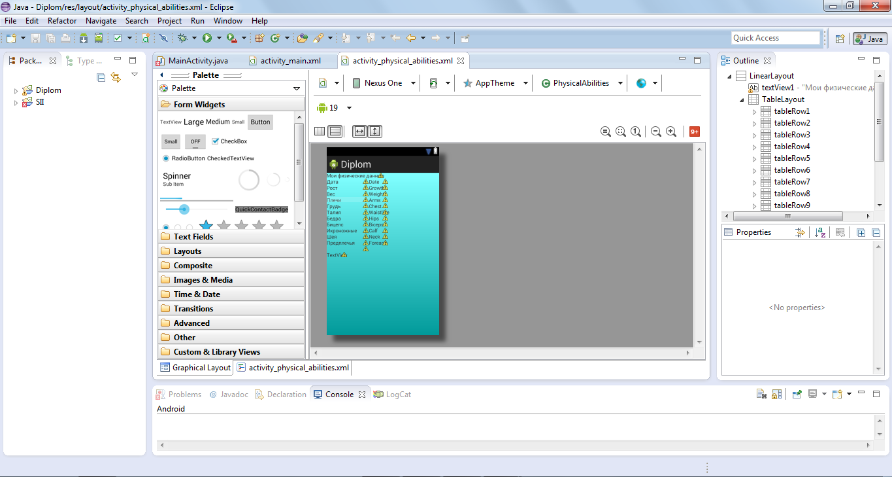
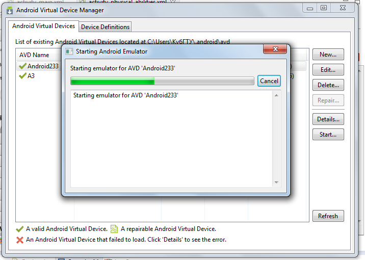
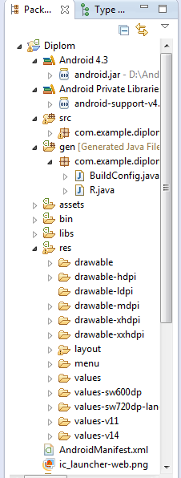

Анализ ПО
1. Платформа Eclipse достаточно удобна для пользователя. Доступный интерфейс, настраиваемые панели. Исходя из того что данный продукт относится к программам для разработчиков программных продуктов можно отметить, что пользователю впервые использующего данный продукт, прежде чем начать пользоваться платформой необходимо будет изучить минимум литературы, так как в большом количестве меню трудно разобраться самому. 
2. Даже при максимальной нагрузке при написании приложений под Android система работает без задержек, что не может не радовать даже пользователей с малой аппаратной мощностью своих компьютеров.
3. Единственный минус в ожидании отклика можно заметить запуск виртуальной системы Andriod. Здесь мощность компьютера играет не маловажную роль. Так же при запуске компилятора для установки крупных проектов на виртуальную систему приходится подождать до 30 секунд.

4. При запуске компилятора имеется значек времени загрузки проекта на виртуальную машину, хотя и не показывает остаток времени он довольно удобен для пользователя.
5. Eclipse имеет окно - проводник, что существенно облегчает поиск рабочих папок и файлов при разработке крупных проектов. В проводнике отображаются все существующие проекты пользователя. Открытие объектов происходит по иерархии. Имеется возможность открытия сразу нескольких проектов, что значительно облегчает доступ к различным файлам.

6. Система имеет понятную и простую навигацию по меню. Достаточно удобная система компонентов разделенная по группам.
7. В недостатках системы можно отметить большое количество дополнительных окон, которые уменьшают рабочее пространство самого приложения при наличии у пользователя монитора небольшого размера. Для увеличения рабочей области приходится скрывать вспомогательные меню и окна.
8. В платформу встроена система помощи при написании кода. При вводе символов появляется контекстное меню в котором можно выбрать тот или иной операнд, что существенно сокращает время набора кода вручную.
9. Так же имеются довольно удобные функции автоматического создания конструкторов, деструкторов, процедур и функций. Данные возможности способствуют сокращению времени затрачиваемого программистом на написание кода.
10. Система автоматически расстанавливает переносы, выделяет цветом операнды, уникальные имена, и переменные. Данная возможность облегчает читабельность кода, что способствует скорейшему обнаружению ошибок.